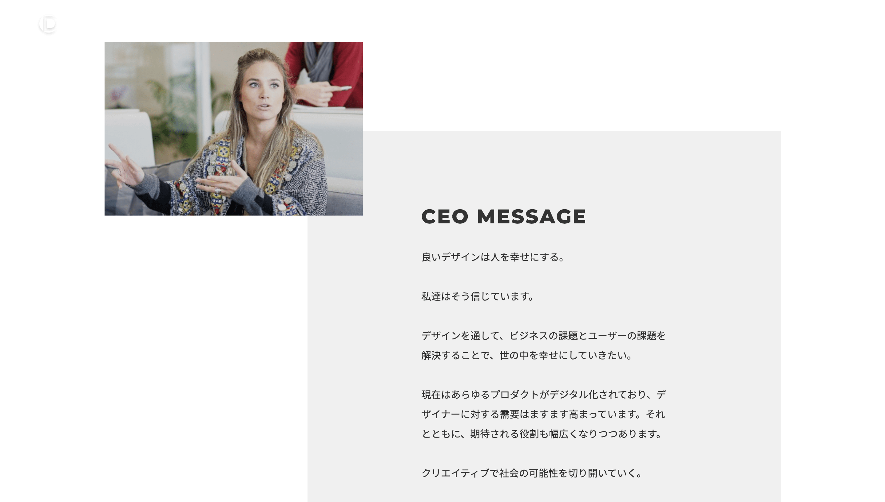
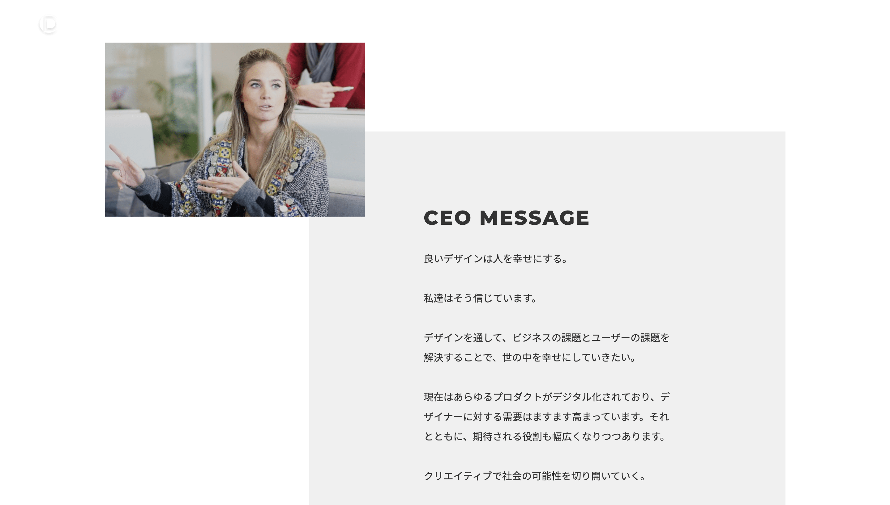

DIGSMILE
 

● 企業サイトのコーディング
● 使用言語：HTML,CSS.jQuery
● ページ数：3枚
Adobeデザインからコーディング致しました。メニュー項目がいくつかありますが、ABOUTページとCONTACTページのみ実装しております。
サイト全体として、FlexBoxを使用してコンテンツを配置しております。レスポンシブ仕様となっており、表示崩れがないなどの確認をしております。
下層ページではABOUTページにてGoogleMap用いて仮想の所在地を表示しております。